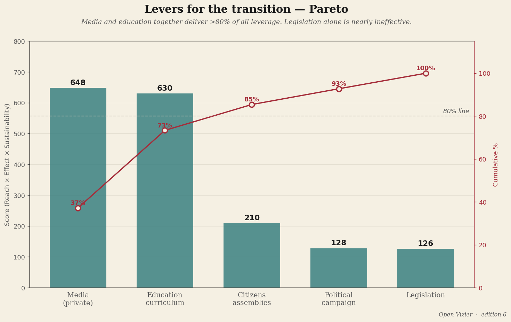

In structural engineering, one distinguishes between orders of resistance. A first-order load causes elastic deformation: the structure springs back as soon as the load is removed. A second-order load causes plastic deformation: a permanent deviation remains, yet the structure still stands. A third-order load approaches the failure limit: buckling, fracture, collapse. In steel, a design is chosen such that the working load always remains well below the elastic limit, with a safety factor of one and a half to two.

The current Dutch democracy is deep into the second order. Permanent plastic deformation — a burgeoning bureaucracy, clogging legislation, declining trust — yet it has not yet succumbed. A rough estimate of the safety factor: approximately one point one. Virtually no margin.
The structural diagram
Media is the strain gauge
A structure without strain gauges cannot be measured; one only knows it has failed when it lies on the ground. The current Dutch media exclusively measure first-order events — scandal amplitude, opinion poll results. No hysteresis, no fatigue, no buckling reserve. What is missing is structural oversight of the supporting member itself.
A Nova Democratia media does what an engineer does with a bridge: continuous measurement instead of incidental reaction; maintaining a loading history; publishing reserve capacity. No longer critical journalism, but structural integrity measurement. That is an operationally different profession.
Levers for the transition — a Pareto
Media and education together account for more than eighty per cent of all leverage. Media scores six hundred and forty-eight, education six hundred and thirty. Legislation alone scores one hundred and twenty-six — without the media lever, every law remains symbolic. Political campaigns score one hundred and twenty-eight: swift, but too brief to change thinking. Citizens' assemblies score two hundred and ten: a profound effect, but too limited in reach.
Media scores higher than education on one crucial point: speed. Education operates over a school generation, ten years or more. Media operates over a news cycle, ten days. For a transition that must begin within a political generation, media is therefore not only the foundation — it is the only lever with sufficient score and sufficient speed.
Legislation without media is symbolic. Education without media works too slowly. Media without the other two is empty. But without media, nothing works.
Phase minus one — cognitive infrastructure
For all the previously mentioned phases, a phase minus one must be in progress: the public learns to read structural indicators. Not through formal education, but through consistent repetition in their own media — Het Open Vizier, Nova Democratia, and related private channels. Three indicators are central: hysteresis (forming coalitions becomes increasingly expensive, formations increasingly long), fatigue failure (a loss of trust that no single incident can explain), and the buckling point (a collapse of legitimacy without a preceding crisis).
Pas wanneer dertig procent van de respondenten in publieke peilingen spontaan structurele termen gebruikt, begint fase nul. Niet eerder. Het is de zelfopgelegde drempel die voorkomt dat de hele constructieverbouwing op verkeerde grond start.
Het Open Vizier · novademocratia.com · Working Material · Jacobus van Merksteijn · June 2026